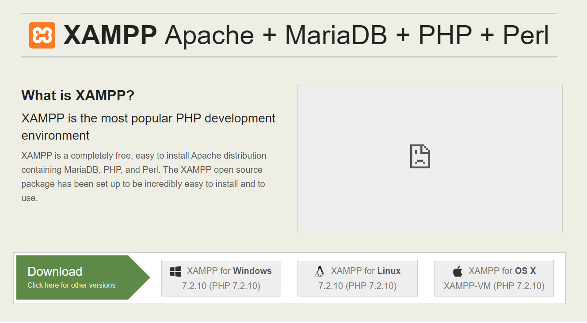

php学习系列之 xampp 使用与配置
前言：
首先，学习一门后台语言肯定是从搭建其环境说起，所以，在学习 php 之前首先必须学习如何搭建 php 环境。之前也了解过一些集成的开发环境，如：phpStudy、LAMP和 xampp等。由于之前工作中与 php 后台对接时使用过 xampp，所以这里我就选择用 xampp 搭建环境。
安装：
不多说，直接上官网，在官网选择适合自己系统的安装包下载即可。这里我选择的是 window 系统版本。

接着下载完，点击安装，除了选择需要安装的目录（这里我的目录是 F:/xampp/install）外，其他都是下一步，最后安装完成。
使用
在打开界面中，点击 “start” 开启 “apache” 服务，当 apache 模块变成绿色后（如图 开启apache服务.png），浏览器打开http://localhost/， 如果能看到 “welcome to xampp”（如图 welcome to xampp.png） 即代表安装成功。
导航内容
在这里，可以通过点击导航的 “FAQs” 来查看安装或者使用中遇到的一些问题，和 “HOW-TO Guides” 来对 xampp 进行一些配置。详细的可以自行查看，这里不一一解释。
xampp 中开发 php
那么安装完，该如何去进行 php 开发呢？
这里，我们可以在 xampp 的安装目录下查找到 “htdocs” 目录，这是 xampp 默认的目录地址，我们开发的所有 php 页面都必须放在这里才能在网站中查看。这里我新建了一个 test.php 页面。
在 test.php 中，我们编写了一个最简单的 php 程序，输出一个 “hello world”：
<?php
echo “hello world”;
?>
接着我们打开浏览器，输入网址 http://localhost/test.php 即可看到浏览器输出 “hello world”。
配置虚拟主机
所谓的配置虚拟主机，就是每个虚拟主机可以映射到服务器的不同子目录，从而实现在同一物理服务器上运行多个网站或web应用程序。英文版可以查看文档：
下面是详细步骤说明：
修改 httpd-vhosts.conf 文件：
在安装目录下（这里我的目录是 F:\xampp\install\apache\conf\extra）找到文件 httpd-vhosts.conf, 在文件的末尾添加如下内容：
1 | <VirtualHost *:80> |
解释：
- 第一个
<VirtualHost>是默认的或者备用的虚拟主机，DocumentRoot配置的是默认的目录地址F:\xampp\install\htdocs,ServerName配置的是localhost, ErrorLog 和 CustomLog 两个打印的分别是 错误日志 和 操作日志。这个目录用于所有未被后续块匹配的请求。- 第二个
<VirtualHost>是自定义配置的虚拟主机，DocumentRoot配置的是创建自定义的目录（这里我创建的F:\php\test\thinkphp），ServerName配置的是 一个虚拟主机指定的一个自定义虚拟域名（这里我自定义的是www.cimi.com）。
现在你的虚拟主机已经配置好了。但是实际上你在浏览器打开 www.cimi.com 并不能看到效果，因为该域实际上并不存在。要解决这个问题，就需要将定制域名映射到本地 IP 地址。
修改 hosts 文件：
在你的电脑上找到目录 C:\windows\system32\drivers\etc 下的 hosts 文件（也可以 win + r 输入 drivers 回车进入到 drivers目录下找到 etc\hosts），并添加以下一行内容：
1 | 127.0.0.1 www.cimi.com |
如图所示：
这里需要注意的是，hosts 需要管理员权限才能修改。（如果不能直接修改保存，可以把该文件拖到桌面，修改保存后再放回目录中。）
测试：
按照文档中说的，至此，我们的配置已经完成了。要测试我们的配置是否成功，只需要在你配置的目录下（F:\php\test\thinkphp）新建一个 index.php 文件，同样我们写入最简单的 hello world 语句，打开 www.cimi.com，但是，这时我们的页面报错了。XAMPP 配置出现 403 错误 “Access forbidden!”
配置中遇到的问题及思路：
（1）出现 403 错误 “Access forbidden!”
‘access forbidden’ 禁止访问。从这里可以看出是权限不够的原因。既然是权限不够，那就配置一下。搜索了一下 apache 的 403 报错，原来还需要配置一下httpd-conf 文件。在安装目录中找到 httpd.conf（
F:\xampp\install\apache\conf\httpd.conf）文件，搜索# <Directory />, 将默认的修改为下面所示:
1 | # 默认的 |
如图所示：
保存文件并重启 apache，再次打开 www.cimi.com，然而还是报错 403
这时是有点懵逼的，不是已经配置了 httpd-conf 文件了吗，怎么还是报错 403 呢？难道还是配置有问题？这时想起后台同事曾经说过，可以查看一下 log 日志。在软件的后面可以查看到一个 Logs 按钮，我就点击了打开了 Apache(error.log)，拉到最底下看到了如图所示：
报错信息显示：client denied by server configuration，百度后才发现原来 apache2.4 与 apache2.2 的虚拟主机配置写法不同导致。我们一开始的写法是 apache2.2 的，所以在版本 apache2.4 下就会报这个错误。修改一下：
在 apache2.2 中 httpd.conf 的写法是：1
2
3
4
5
6
7
8
9
10
11
12# v2.2
<Directory />
Options FollowSymLinks
AllowOverride None
Order deny,allow
Deny from all
</Directory>
# v2.4
<Directory />
Require all granted
</Directory>
再次重启一下，打开浏览器，完美。这时我们的网址就能打开 www.cimi.com，看到 hello world。
（2）安装 xampp 在最后完成时出现 -n 的报错
① 安装 xampp 时提示找不到文件 “-n”；
② 提示没有安装 Microsoft Visual C++ 2008 Redistributable Package (x86)。
【解决方法】
遇到这两个错误后不管它，继续安装。完成后下载 Microsoft Visual C++ 2008 Redistributable Package (x86)，可以到这里下载：http://download.csdn.net/detail/hqocshheqing/9479606，安装完这个之后双击 xampp 安装目录下的 setup_xampp.bat 文件，最后运行安装目录下的 xampp-control.exe 文件，此时启动 Apache 就可以成功了。
（3）安装完 xampp 但是打开 apache 出现报错信息：
① Port 80 in use by “Unable to open process” with PID 4!
【解决方法】
PID 4 是系统的服务占用了80端口，所以要么结束系统服务，要么修改apache端口。PID4 的服务是 World Wide Web Publishing Service。这里选择结束这个系统服务，win + r 运行 services.msc，找到 World Wide Web Publishing Service 然后停止该服务即可。防止下次开机再出现这种情况，在属性里可设置成手动启动。
修改数据库的默认密码
- 修改默认密码：打开 xampp 的 shell 界面，输入命令行 ：
mysqladmin -u root -p password xxxx（“xxxx” 为你设置的密码），运行后会提示输入旧密码(没有就不填)，如果正确，则会立即修改新输入的密码； 在你的
F:\xampp\install\phpmyadmin\下搜索config.inc.php并修改为下面所示：（默认 password 是空的，这里填写上和你第一步中一样的新密码即可）1
$cfg['Servers'][$i]['password'] = 'xxxx';
在浏览器中输入
http://localhost/phpmyadmin（如果设置了虚拟主机就可以输入http://www.cimi.com/phpmyadmin/）， 即可查看到数据库情况。